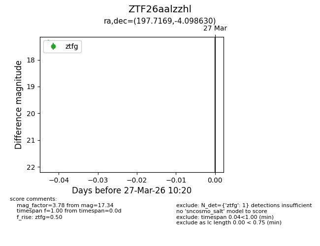
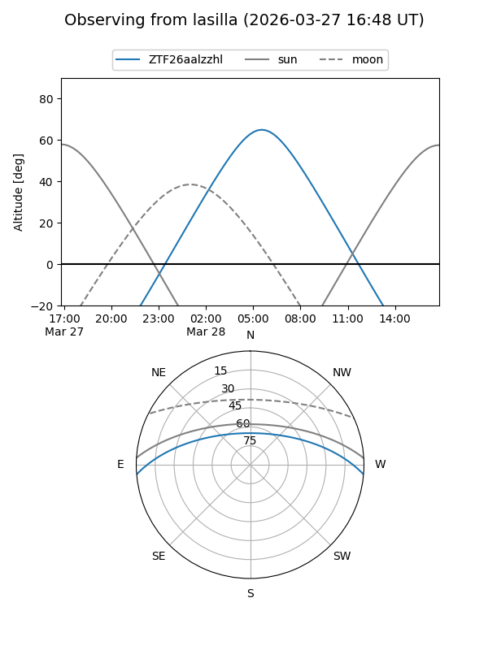
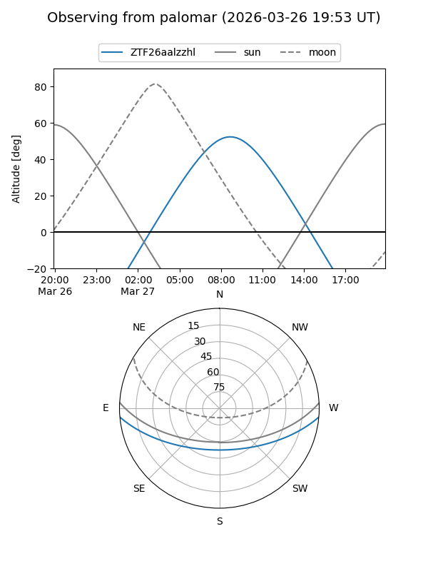

ZTF26aalzzhl
Target ZTF26aalzzhl at 2026-03-27 10:23
Aliases and brokers:
FINK: link
Lasair: link
ALeRCE: link
alt names
ZTF26aalzzhl (ztf,fink_ztf)
Coordinates:
equatorial (ra, dec) = 197.7169,-4.09863
equatorial (HMS+DMS) = 13:10:52.06,-04:05:55.07
galactic (l, b) = (312.2138,+58.42253)
Flags:
Photometry:
last ztfg=17.34
1 ztfg detections
Lightcurve

Visibility


Additional plots